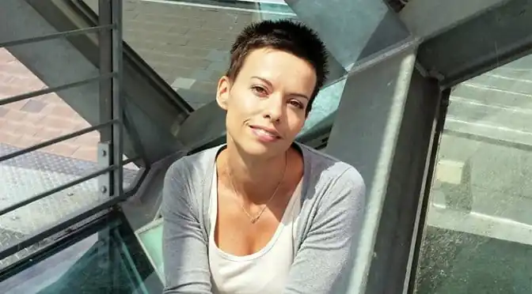

Письменниця, авторка прози для підлітків.
Народилася в Миколаєві, де й закінчила школу №50. Її шкільні й дворові друзі були яскравими особистостями, завдяки чому до п'ятнадцяти років Надя переслухала всю доступну на той час рок-музику, відвідала сотню андеґраундних рок-концертів, обов'язково записуючи подробиці в щоденник, ще й підкріплюючи свої враження віршами.
Закінчила Таврійський національний університет за спеціальністю англійська мова й література. Працювала викладачкою англійської мови у філії Києво-Могилянської академії, шукала себе в різних професіях, у міжнародних компаніях, у подорожах світом. Від 2010 року мешкає закордоном, спочатку у Великій Британії, а тепер у Штатах. Авторка кількох оповідань (збірник "Чат для дівчат"), повісті "Крута компанія" (отримала у 2017 році відзнаку "Топу БараБуки"). Пише завжди й усюди. Працює над романом і новою повістю для молодих дорослих("young adult").